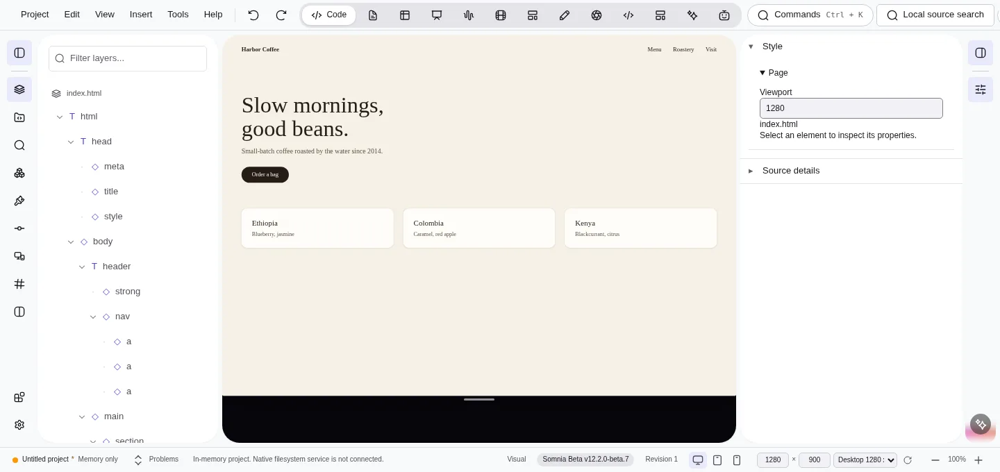
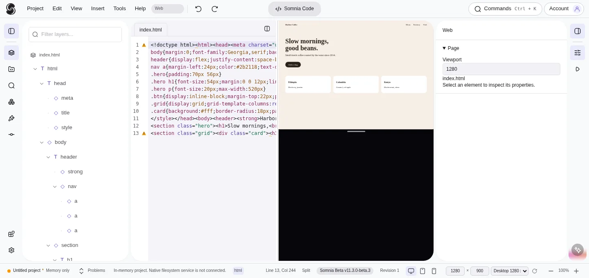
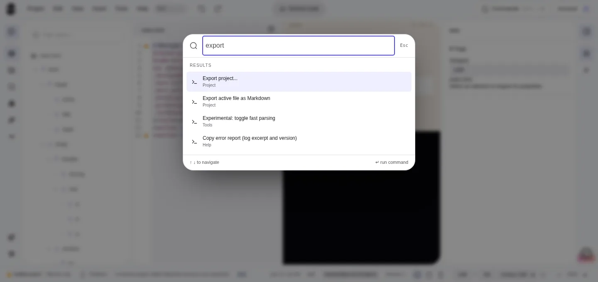
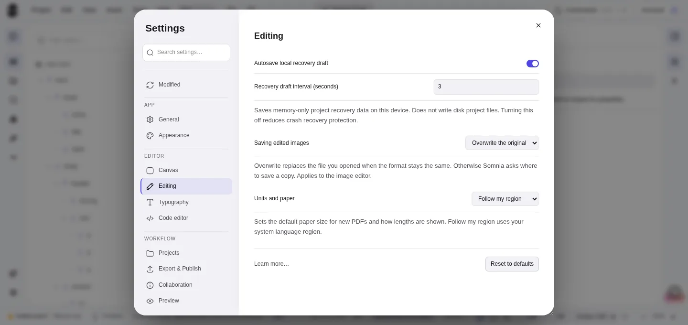

Free beta · Windows, macOS & Linux
Design beyond code.
The local-first creative studio. Your canvas, your code, your files.
What it is
One app for the whole creative job.
Somnia started as a visual editor for the web, a successor to the Dreamweaver way of working. It is growing into a set of studios that share one shell and one set of files on your disk.
One source, two views
Edit on the canvas or in the code. Both change the same real HTML and CSS, with shared undo. Nothing is regenerated behind your back.
Your files, your machine
Somnia opens folders and files on your disk and saves back to them. No account to create, no cloud copy you did not make yourself.
Honest software
This is a beta and it says so. Rough edges are listed in the open, and the roadmap is public.
Studios
Nine studios in one app.
Switch studios with the pill in the header. Your project and your files stay where they are. Every studio is in beta; Code is where Somnia started and the others are younger.
- Beta
Code
A live visual canvas and real code on the same file. Layers, inspector, split view, a code editor with linting and formatting, and shared undo.
- Beta
Design
Arrange text and shapes on artboards, then export your layout as SVG. Works on its own design project files.
- Beta
Documents
Open a Word document, edit it on the page and save a copy. Your original stays untouched.
- Beta
Sheets
Open Excel workbooks, edit cells and work with formulas.
- Beta
Slides
Open a PowerPoint file, preview the slides and edit slide text. Saves as a new copy.
- Beta
Photos
Crop, adjust and refine images with non-destructive edits and history.
- Beta
Vector
Shapes, paths and layers on SVG. Pen and node tools, path booleans, gradients and bitmap trace.
- Beta
Sound
Open mp3, wav, flac, ogg or aiff. Trim silence, reverse, change pitch, add effects and fades, then export a rendered copy.
- Beta
Video
Arrange clips on a timeline, trim, split and reorder them, and export your edit. Output formats depend on what your system can encode.
3D, Interface and Animation
More studios are being built. They are not in a published release yet, and they will be labeled as what they are when they arrive.
Vibe Space
An experimental studio for running AI agents on your project. It is in the beta builds as an early alpha, and you should treat it that way.
What works today
Design and code, on the same file.
Canvas and code stay in sync.
Click an element on the canvas and the matching code is highlighted. Change the code and the canvas follows.
- Layers, breadcrumbs and an inspector for the page you are editing.
- Problems panel for linting, syntax and accessibility issues.
- Command palette on Ctrl+K (Cmd+K on macOS) for everything in the menus.
- Export as a ZIP, a folder, a single HTML file or Markdown.

Real code, not generated code.
Split view shows the source next to the preview. Whatever you do on the canvas is a real edit to your HTML and CSS.
- A proper code editor with Emmet, auto-close tags, find and replace and Prettier formatting loaded on demand.
- Diff viewer to see what changed against disk or the last save.
- Per-project settings stored next to your files in .somnia/settings.json.



Built-in editors
Images, SVG and PDF without leaving the app.
Images
Raster editing with history and non-destructive operations, layered documents, read-only previews for more formats such as TIFF and PSD, and batch conversion.
SVG
Move, resize and draw. Node editing, path booleans, gradients, bitmap trace, snapping, guides, clip and mask.
PDF
Works on copies. Add and edit comments, and design AcroForm fields. XFA forms are view-only.
Local-first
Your files stay on your machine.
Somnia is MIT licensed and free. Read the code, fork it, keep it.
No account
Download, install, work. There is nothing to sign up for.
No telemetry
The app does not collect usage data. Its network use is update checks against GitHub, collaboration hosts you choose, and the AI provider if you turn the agent on.
Plain files
HTML, CSS and ordinary documents on your disk. Open the folder in any other tool at any time.
Open source
MIT license, public repository, public roadmap.
Live collaboration is early. Hosts share a session over the local network or a relay you run yourself; there is no Somnia server in the middle. See how it works.
Optional AI agent
AI that asks first.
The agent panel is optional. If you never turn it on, nothing is sent anywhere.
- Your keys, your models. Bring your own key for OpenRouter, OpenAI or Claude, or run local models through Ollama.
- It asks before each file. The agent requests permission before it reads or writes a file.
- You review every change. Edits arrive as a preview. Nothing is saved automatically.
- Cloud is opt-in. Cloud processing only happens after you agree to it.
The agent is early software. It proposes, you decide. Read how it works.
Extensions
Extensions, with permissions you grant.
Extensions add commands, snippets, code themes and side panels. They run offline, are off until you switch them on, and can only do what their declared permissions allow.
An SDK in the repo
A manifest format, a permission model, an API reference and a tutorial. Start with Hello World and build up.
A reviewed index
Browse extensions from inside the app. Packages in the index are pinned by hash. Examples today: Quiet Colors, Accessibility Audit and SEO Preflight.
Install on your terms
Every install shows a review first. Closing it installs nothing, and new extensions start disabled.
Download
Get the beta.
Free for Windows, macOS and Linux. Installers come straight from GitHub Releases.
Loading the current release from GitHub… If this stays empty, open the releases page.
Known limits, said plainly
- Installers are not code-signed yet. Windows SmartScreen and macOS Gatekeeper can warn. Compare the SHA-256 checksum with the one on the release.
- macOS builds are Apple Silicon only, ad-hoc signed and not notarized. Right-click the app and choose Open the first time.
- Linux ARM64 ships as a .deb package only.
- ARM64 builds are compiled and checked in CI but have not been tested on real hardware.
- Deploy, frameworks and the command line tool are experimental. Collaboration and the AI agent are early.
On Windows you can also find Somnia in the Microsoft Store as Somnia Editor. The Store version can differ from the GitHub release.
Docs
Read the docs in the repo.
Documentation lives next to the code on GitHub, so it changes with it.
Roadmap
Built in the open.
The plan is a public GitHub project board. It shows what is being worked on, and it changes often. It is a direction, not a promise.
Where it is going
- More studios: 3D, Interface and Animation are in development.
- Vibe Space, the agent studio, is in early alpha today.
- Releases are labeled as betas, with known issues listed in the release notes.
Follow along
Watch releases, open an issue when something breaks, or send a pull request.
FAQ
Questions, answered straight.
Is Somnia free?
Yes. It is MIT licensed and there is no account to create.
Is it stable?
No, it is in beta and it says so. Releases are built and tested in CI, but you will hit rough edges. Known issues are listed on every release.
Does the AI do the work for me?
No. The agent is optional and off until you turn it on. It asks before it reads or writes each file, shows every change as a preview and never saves on its own.
Where does my work live?
On your disk, as plain files. Somnia has no cloud copy of your project.
Does it work offline?
Editing does. The network is used for update checks, extension browsing, collaboration with hosts you choose, and a cloud AI provider if you enable one. Local models through Ollama work without a cloud.
Is there a Mac version for Intel?
Not yet. macOS builds are Apple Silicon only.
Is this a Dreamweaver replacement?
It is aimed at people who like working on the design and the code side by side. Today it is a beta, not a finished replacement.
What about 3D, interface design and animation?
They are in development and not in a published release yet.